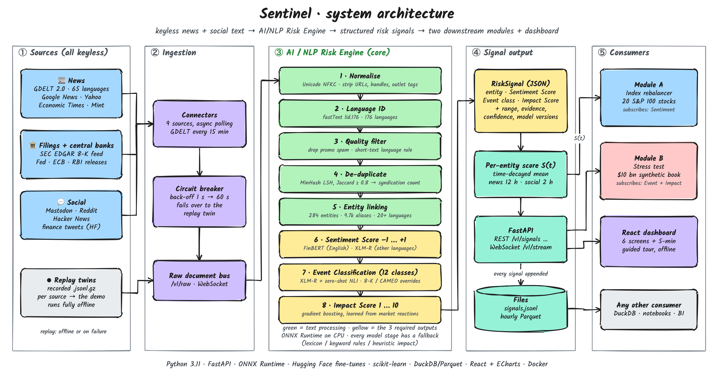
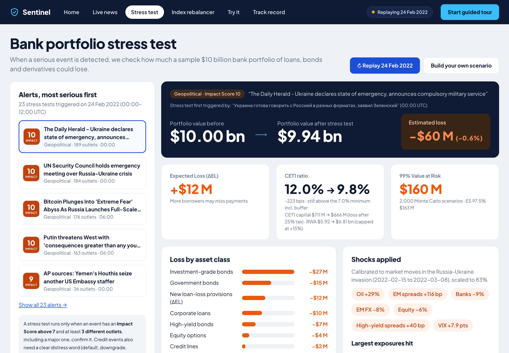

docker compose upA risk desk needs to answer four questions, minutes after a story breaks:
Lexicons and keyword alerts miss context, ignore non-English sources and cannot size the hit. A single headline should never move capital on its own.
9 keyless sources (GDELT in 65 languages, RSS, SEC 8-K, Fed/ECB/RBI, Mastodon, Reddit, HN, tweets). Circuit breakers fail over to recorded replays.
Fine-tuned FinBERT + XLM-R score sentiment per entity; 12 event classes; 284 entities with 9.7k aliases in 20+ languages.
The Impact Score (1–10) is trained on 74,964 past news items labelled with the abnormal stock or index move that followed.
Both modules built: A index rebalancer and B stress test. Time-split tests, frozen sets, placebos, and every miss published.

| Choice | Why | Evidence (measured) |
|---|---|---|
| Fine-tuned FinBERT (EN) + XLM-R (multilingual), entity-aware input | Lexicons miss finance context and which company a sentence is about | Macro-F1 0.85 vs 0.45 for LM + VADER (+0.40) |
| Impact = gradient boosting on realised abnormal returns | Hand-written severity rules are not grounded in market outcomes | Spearman ρ 0.115 vs 0.043 heuristic (2.7×), 2024+ out of sample |
| Cheap filters before any model: entity gate, MinHash dedupe, spam rules | Most documents mention no tracked name or are wire copies | ≥ 64% of docs skip the models; 13% collapsed as duplicates |
| ONNX Runtime FP32 with fp16 storage, not INT8 | Full INT8 cost 2–3 accuracy points on our data | Model files halved; prediction agreement 1.00 |
| Corroborated trigger: > 7 impact, ≥ 3 outlets incl. tier-1, 6 h clusters | One headline should not move capital | 24 Feb 2022: 3,107 signals → 23 tests (135× fewer) |
| Shocks calibrated on real episodes; Basel IRB + Monte Carlo | Defensible numbers instead of an arbitrary “−10%” | Ukraine 2022 · 2022 hikes · SVB 2023; 10k draws in 0.21 s |
| Circuit breakers + replay twins for every source | Free sources rate-limit and fail | Demo and tests run with zero network access |
Mean realised move (in σ of the stock's own residual volatility) by predicted score · 2024+ test
Score 10 moves 2.3× more than score 1. Scores 1–8 are nearly flat (an honest limitation).

| Target | Goal | Measured | |
|---|---|---|---|
| English sentiment macro-F1 | ≥ 0.85 | 0.851 | ✓ met |
| Event macro-F1 | ≥ 0.80 | 0.818 | ✓ met |
| Credit-event F1 / precision | 0.65 / 0.80 | 0.80 / 0.67 | ½ partly |
| Native multilingual sentiment F1 | ≥ 0.75 | 0.53 | ✗ missed |
| Impact Spearman ρ | ≥ 0.25 | 0.115 | ✗ missed |
| Latency p95 / throughput (CPU) | 150 ms / 150 docs/s | 254 ms / 10–13 | ✗ missed |
| Module A beats 95% of placebos | net IR > 0 | IR −1.43 · 33% | ✗ no edge |
Synthetic seeded bank book (sector mix from the public transactions dataset). Evaluation sets annotated blind and in two passes, with a human spot-check pending. Recorded tweets stand in for X, which has no keyless API.
Why publish the misses? A machine-translated test said our multilingual model scored 0.83; real native headlines said 0.53. We report the real number. Every metric comes from a time-split or frozen test set, touched once, and is regenerated by a script.